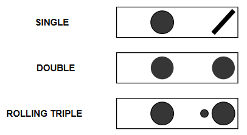
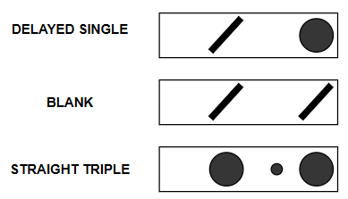
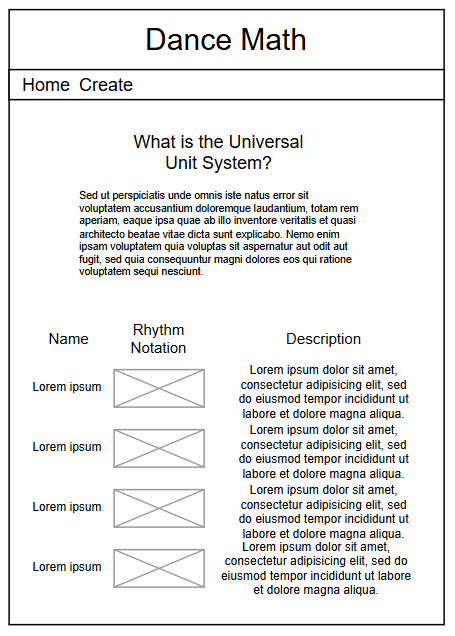
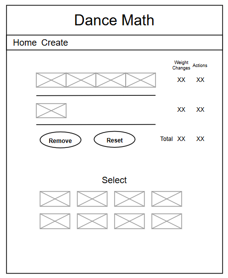

Overview
Purpose
The purpose of this site is to visually represent dance rhythms in Universal Unit System dance notation. This will educate dancers and give them a chance to use what they learned.
Audience
This site is for dancers who want to track counts in a sequence, weight changes, and rhythmically represent their dancing.
Dynamic elements
Information for all rhythm units will be stored in rhythmUnits.js. RhythmUnit objects have a name, numWeightChanges,numNonWeightActions, description, and an image.
On the home page, all RhthmUnits will be displayed with their
RhythUnit information will be used on the 2nd page to add or remove rhythm units to a sequence created by the user. Clicking on a given rhythm unit will add that rhythm to the array. The total numWeightChanges and numNonWeightActions will be added together for the user. For every rhythm in the array, an element will be created and placed in the web page.
Each rhythm unit represents 2 beats of music and 8 beats make a sentence in a musical phrase. To visually represent this structure, when more than 4 rhythm units are included, a new row is created to keep the rhythms grouped together in 8 counts.
Users will be able to remove selected units from the collection, removing the RhythmUnit from the array.
Branding
Website Logo

Style Guide
Color Palette
Palette URL: https://coolors.co/031d44-5db7de-f67451-f1e9db-d7263d| Primary | Secondary | Accent 1 | Accent 2 |
|---|---|---|---|
| [#042A62] | [#F67451] | [#5DB7DE] | [#F1E9DB] |
Typography
Heading Font: Tahoma, Verdana, sans-serif
Paragraph Font: Geneva, Verdana, sans-serif
Normal paragraph example
The Universal Unit System (UUS) is a method created by dance legend Skippy Blair that allows dancers to "read" and analyze dance rhythms much like a musician reads sheet music.1While most dance classes teach students to count to 8 (e.g., "5, 6, 7, 8"), Skippy Blair recognized that this often confuses students because the actual footwork doesn't always line up neatly with those 8 beats. Instead, she developed a system based on what your feet are actually doing in relation to the music.
Colored paragraph example
The Universal Unit System (UUS) is a method created by dance legend Skippy Blair that allows dancers to "read" and analyze dance rhythms much like a musician reads sheet music.1While most dance classes teach students to count to 8 (e.g., "5, 6, 7, 8"), Skippy Blair recognized that this often confuses students because the actual footwork doesn't always line up neatly with those 8 beats. Instead, she developed a system based on what your feet are actually doing in relation to the music.
Navigation
Content
Home page
The Universal Unit System (UUS) is a method created by dance legend Skippy Blair that allows dancers to "read" and analyze dance rhythms much like a musician reads sheet music.1While most dance classes teach students to count to 8 (e.g., "5, 6, 7, 8"), Skippy Blair recognized that this often confuses students because the actual footwork doesn't always line up neatly with those 8 beats. Instead, she developed a system based on what your feet are actually doing in relation to the music.
1. The "Unit" (The 2-Beat Rule) The core philosophy of the system is that almost all dance music and movement can be broken down into 2-beat increments, called "Units."2Instead of trying to memorize a long, complex 8-beat pattern, the UUS treats a dance pattern like a sentence made up of small, 2-beat words. If you can understand these tiny 2-beat "words," you can string them together to create any complex dance pattern.
2. "Sound" vs. "Silence"Blair’s system simplifies dance into two states of being. To a dancer, "rhythm" is simply the arrangement of weight changes (steps) over time.3Sound (•): You take a step (a weight change).Silence (/): You pause or hold (no weight change).
3. The Three Basic RhythmsUsing the 2-beat rule and the concepts of Sound and Silence, the UUS defines the three fundamental building blocks of almost all partner dances (especially Swing).Rhythm TypeWhat you doNotationDescriptionSingle RhythmStep, Hold• /One weight change in 2 beats. (You step on beat 1, and wait on beat 2).Double RhythmStep, Step• •Two weight changes in 2 beats. (You step on beat 1, and step on beat 2).Triple RhythmStep-Step-Step•••Three weight changes in 2 beats. (You step on 1, step in between, and step on 2).
 [Page 2]
Most if not all of the information about each Rhythm Unit will be on the home page. This page will share the images for each unit to be selected and added to the sequence.
Wireframes
Home
The number of RhythmUnits added is based on what is in rhythmUnits.js. There is no set number for the page.
[Page 2]
The number of RhythmUnits that can be added to the user sequence is dependent on what is in rhythmUnits.js. Clicking remove will remove the last rhythm added to the sequence.
